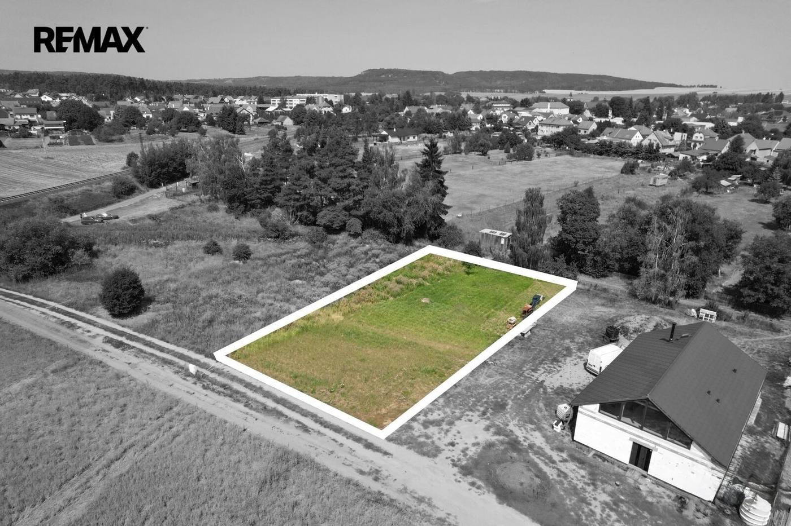
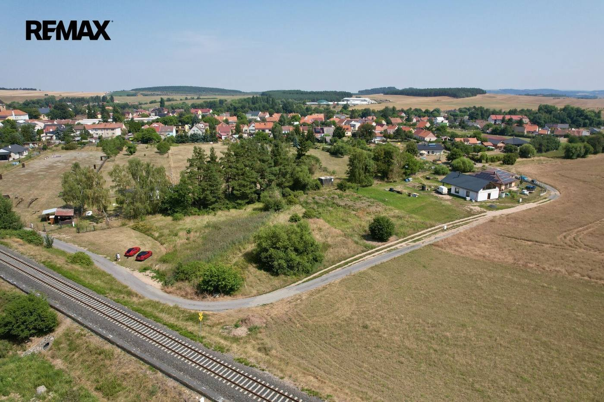
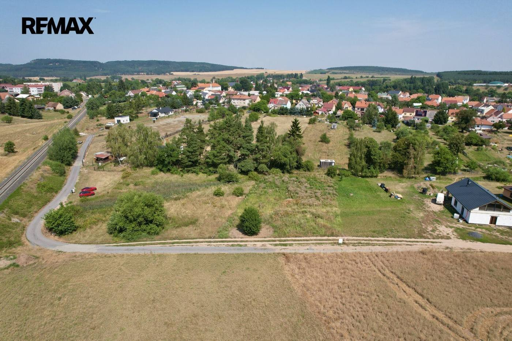
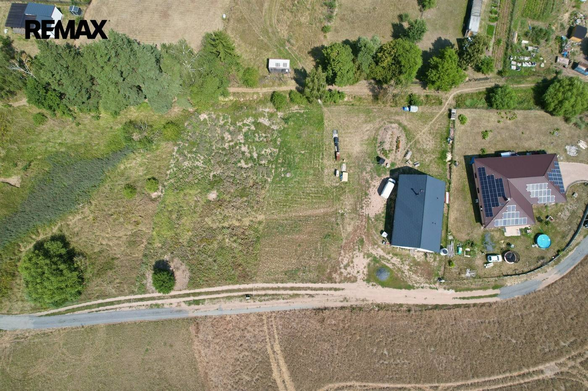
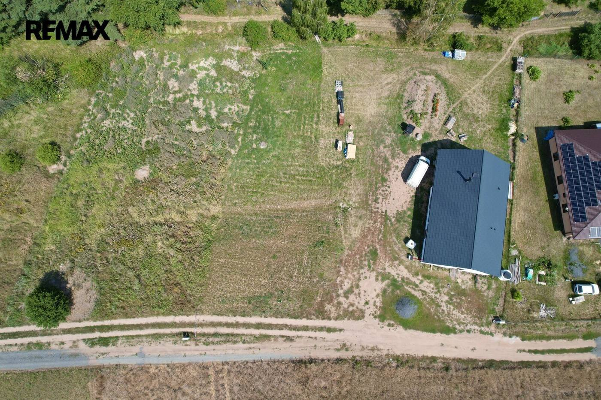
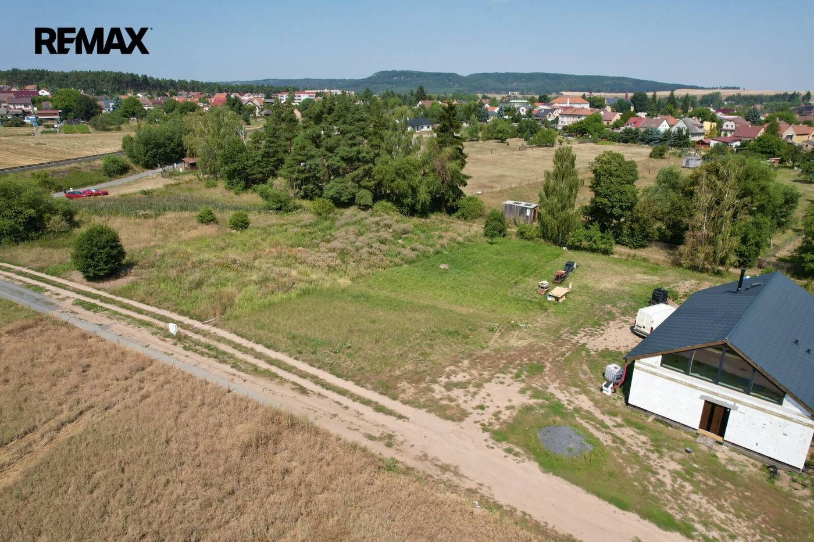
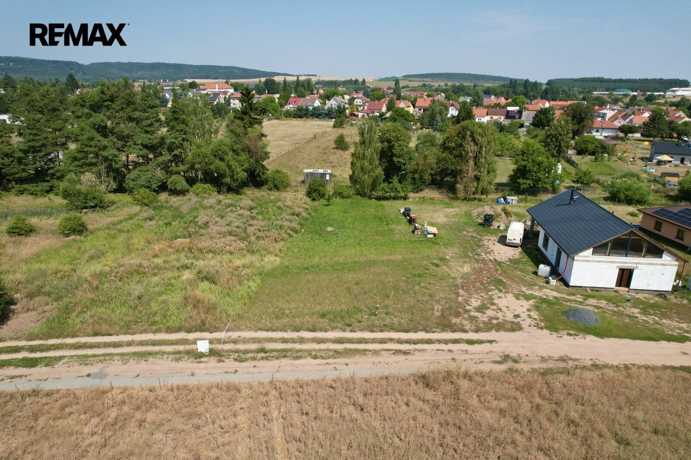
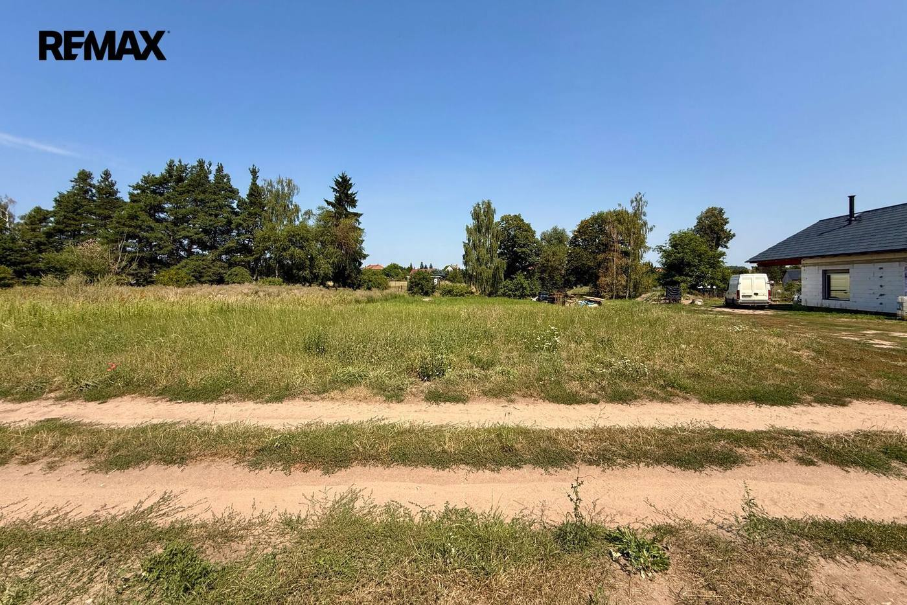
- Plocha1268 m²
- Číslo zakázky032-NP09874
Video prohlídka
O nemovitosti
Místo, kde může začít příběh vašeho nového domova.
Představte si dům, který nebude navržený podle představ někoho jiného, ale přesně podle těch vašich. Dům, kde budou mít děti svůj pokoj, kde se budete společně potkávat u jednoho stolu a kde si na zahradě vytvoříte místo pro letní grilování, dětské hry i klidné večery s výhledem do krajiny.
Právě takovou příležitost nabízí stavební pozemek o rozloze 1 268 m² v obci Vroutek, okres Louny.
Dostatek prostoru vám dává možnost vytvořit nejen vysněný rodinný dům, ale také zahradu, která se může stát přirozeným pokračováním vašeho domova. Místo, kde budou děti vyrůstat, vy si odpočinete od každodenního shonu a společně budete tvořit vzpomínky, které zůstanou na celý život.
Velkou předností je poloha pozemku. Nabízí příjemný pocit klidu, kontakt s přírodou a krásné výhledy do okolní krajiny. Přitom se nemusíte vzdávat dobré dostupnosti – napojení na dálnici Praha–Karlovy Vary je vzdálené přibližně 10 minut.
Pro každodenní rodinný život je důležitá také občanská vybavenost. Přímo ve Vroutku najdete mateřskou a základní školu, zdravotní středisko a další potřebné služby. Výhodou je rovněž dostupnost autobusové i vlakové dopravy.
Okolní příroda navíc vybízí k procházkám, výletům na kole i společně strávenému času venku.
Nekupujete jen 1 268 m² pozemku. Kupujete místo, na kterém může vyrůst váš budoucí domov.
Pokud hledáte prostor, kde by vaše rodina mohla zapustit kořeny a vytvořit si bydlení přesně podle svých představ, rád vám toto místo osobně ukážu. V případě zájmu o prohlídku nás neváhejte kontaktovat.
Prodávající si vyhrazuje právo vybrat kupujícího na základě jím zvolených kritérií.
Parametry
- Druh pozemku
- Pro bydlení
- Celková plocha
- 1 268 m²
- Inženýrské sítě
- Elektřina
- Typ nemovitosti
- Pozemky
- K nastěhování
- 30. 7. 2026
- Doprava
- Vlak, Silnice, Autobus
- Umístění objektu
- Klidná část obce
Kde to je


Mohlo by Vás zajímat
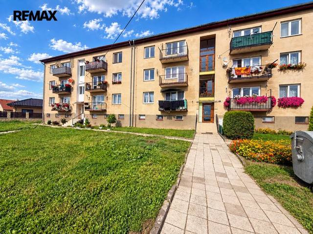
Prodej · BytNové 2 350 000 KčProdej bytu 3+1 v osobním vlastnictví 64 m², Podbořany Letov, Podbořany 3+164 m²1. podlaží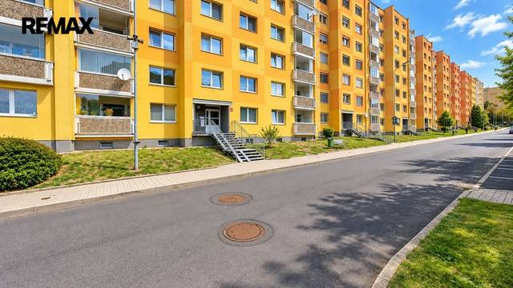
Prodej · BytNovéVideo 3 100 000 KčProdej bytu 3+1 v družstevním vlastnictví 81 m², Klášterec nad Ohří Klášterec nad Ohří 3+181 m²2. podlaží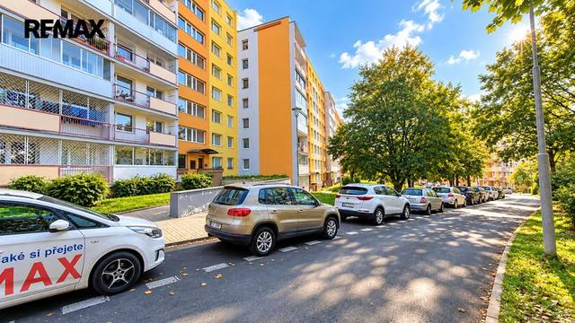
Prodej · BytNovéVideo 2 950 000 KčProdej bytu 3+1 v osobním vlastnictví 69 m², Most Most 3+169 m²1. podlaží